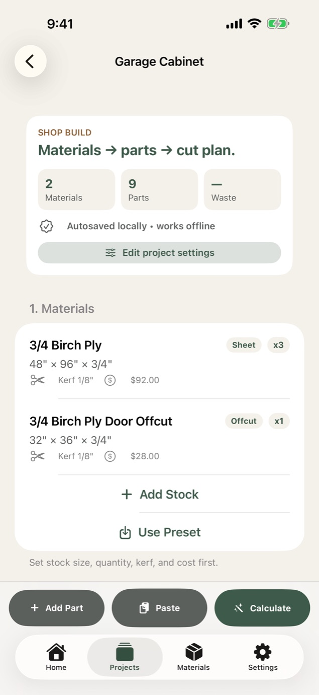
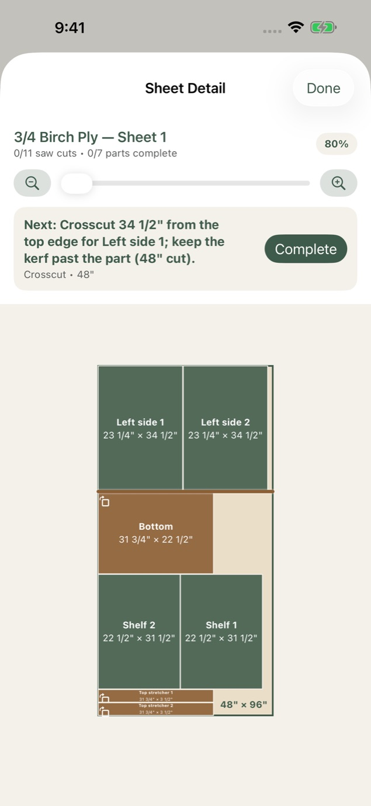
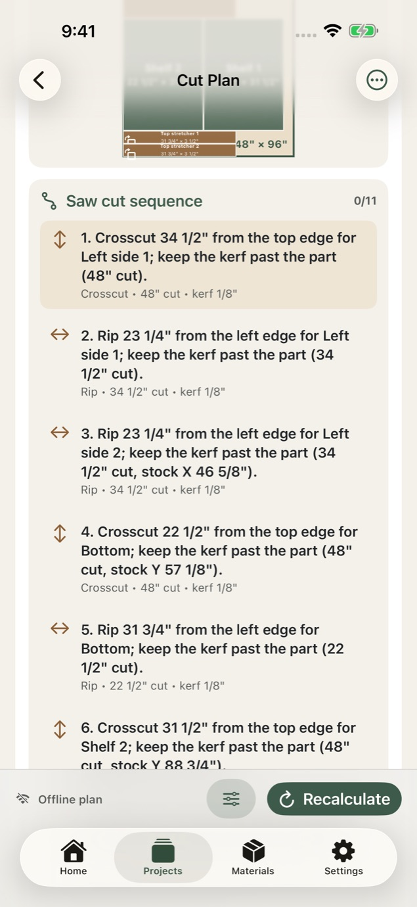
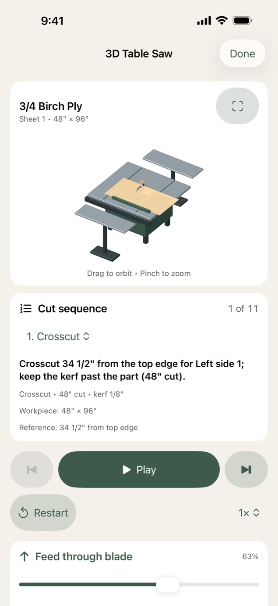

Free
$0
The complete planner
No account needed.
- Up to 3 active projects
- Every layout and cut-sequence feature
- 3D table saw preview
- A sample project that doesn't count toward your 3
- Backup and restore through Files or iCloud Drive
Cut list optimizer for iPhone and iPad
XyloKerf lays out your parts on plywood, MDF and boards with the blade kerf, grain direction and trim margins accounted for. Then it walks you through every rip and crosscut in order.
Free for up to 3 active projects. No account needed. For iPhone and iPad with iOS 17 or later.
Crosscut 34 1/2" from the top edge for Left side 1; keep the kerf past the part (48" cut).
How it works

Step 1
Add sheets, boards and offcuts with size, quantity, kerf and cost. Then type your parts in, paste a list, or import a photo of a written cut list. You review every row before it's added.

Step 2
XyloKerf tries several layout strategies and keeps the one that uses your stock best. If a part can't fit, it tells you which one and why.

Step 3
Follow numbered trim, rip and crosscut steps and check them off as you go. Your progress is saved, so you can stop for the day and pick up at the next cut.
3D table saw preview
Each sheet's cut sequence plays on a 3D table saw. The workpiece turns between rips and crosscuts, feeds through the blade, and the part comes free with the kerf left behind.

Built around real stock
Kerf drawn wider than scale.
Four rips with a 1/8" blade turn half an inch of plywood into sawdust. XyloKerf leaves room for every kerf, so the last part off the sheet still comes out full size.
Privacy
Projects are planned and saved on your iPhone or iPad, and the planner works offline in the shop.
Back up and restore your projects through Files or iCloud Drive.
Text recognition only sees the photo you choose, and it runs on your device.
Pricing
Free
$0
The complete planner
No account needed.
XyloKerf Pro
$39.99per year
That's $3.33 a month. Or pay $4.99 monthly.
Try it free for 7 days with the yearly plan.
Upgrade from inside the app whenever you need it.
US prices. Prices are shown in the app before you buy and may vary by country or region. The free trial is for eligible new subscribers. XyloKerf Pro is an optional auto-renewable subscription that renews unless canceled at least 24 hours before the end of the current period. Manage or cancel it in your App Store account settings.
Free on iPhone and iPad. Requires iOS 17 or later.